Examen · Intelligence artificielle appliquée au marketing
Créer une marque avec l'IA : LumexIA
Éclairage connecté qui suit ta journée. Système de marque, site web, photos, publications, vidéo et campagne, produits avec Claude Code, Gemini et Veo 3.
GroupeNOM Prénom et NOM PrénomFormationTechnifutur · année 2026-2027ProfesseurPascal ButeraCode sourcegithub.com/Vald-01/LumexIASite en ligneadresse Netlify à compléterDateDécembre 2026
Sommaire
1Le projet en bref
2Les outils utilisés
3La démarche, étape par étape
4La marque : projet, cible, positionnement
5Le branding : nom, logo, identité
6La charte graphique et le ton
7Les fiches produits et le système de marque
8Le site web
9Les photos
10Les publications pour les réseaux sociaux
11La vidéo
12La landing page de campagne
13Nos prompts et nos skills
14Le workflow IA : agents et sous-agents
15Réutiliser le workflow
16Conclusion
1Le projet en bref
LumexIA est une marque fictive d'éclairage connecté. Ses ampoules et ses lampes adaptent automatiquement leur lumière au moment de la journée, pour plus de confort, de bien-être et d'économies d'énergie, sans abonnement.
Nous avons construit la marque complète avec l'IA, en suivant une règle simple, reprise du séminaire : d'abord les fichiers .md de la marque, ensuite les contenus. Tous les contenus (site, images, posts, vidéo, campagne) sont produits à partir de ces fichiers, ce qui garantit leur cohérence.
Vidéo Veo 3 de 10 s, moodboard, storyboard, prompts
video/
Landing page de campagne
Black Friday « On rallume »
campagne/, site/black-friday/
2Les outils utilisés
Outil
Rôle dans le projet
Claude Code (application de bureau Claude, modèle Opus 5.5)
L'agent principal : il lit les consignes et le dépôt de référence, rédige les fichiers .md de la marque, écrit les skills, code le site, prépare les prompts d'images et de vidéo, retouche les images, teste le site dans un navigateur intégré, génère les visuels et ce rapport, et publie sur GitHub.
Gemini (génération d'images « Nano Banana »)
Les 29 images : logos, photos produit, photos d'ambiance, série « arc de la journée », cibles, marque, image de partage.
Veo 3 (dans Gemini)
La vidéo de marque, à partir des prompts et des images de référence.
Zeoob
Les maquettes de posts Instagram, pour montrer le rendu réel des publications.
GitHub
Le dépôt du projet : chaque étape est enregistrée dans un commit, ce qui retrace toute la démarche.
Netlify
La mise en ligne du site : chaque envoi sur GitHub met le site à jour automatiquement.
Google Chrome (sans interface) et Python (Pillow)
Utilisés par les scripts de Claude Code pour transformer des gabarits HTML en images PNG (posts, moodboard, storyboard), produire ce PDF et détourer les logos.
Pourquoi Claude Code plutôt qu'un simple chat ? Parce qu'il travaille directement dans le dossier du projet : il lit et écrit les fichiers, lance des scripts, vérifie lui-même le résultat (calculs, longueur des textes SEO, contrastes, affichage sur mobile) et garde le contexte de la marque grâce au fichier CLAUDE.md.
3La démarche, étape par étape
#
Étape
Ce qui s'est passé
1
Lecture des consignes
Claude Code lit le PDF des consignes en entier avant toute action.
2
Choix du sujet
Nous proposons LumexIA et ses 4 cibles. Claude Code lit le dépôt de référence du séminaire pour reprendre sa méthode (fichiers .md d'abord).
3
Système de marque
Rédaction des 6 fichiers .md, de CLAUDE.md et de 4 skills. Contrastes des couleurs et longueurs SEO vérifiés par script.
4
Site et prompts
Génération du site (14 pages) et de 29 prompts d'images pour Gemini, avec l'ordre de génération et les noms de fichiers.
5
Images
Nous générons les images dans Gemini. Claude Code les importe, corrige deux noms de fichiers, détoure le logo et efface un logo de marque d'une photo.
6
Corrections
Nous demandons des cartes produits plus légères (badge plus court, moins d'informations, ancien prix au-dessus du prix).
7
Campagne
Landing page Black Friday : brief, offre conforme à la loi, page, et un cinquième skill pour les prochaines campagnes.
8
Réseaux sociaux
9 publications et 14 visuels générés, puis mis en scène sur Zeoob avec un avatar rond créé pour l'occasion.
9
Vidéo et rapport
Moodboard, storyboard et prompts Veo 3 ; nous générons la vidéo dans Veo 3, puis ce rapport est généré en PDF.
4La marque : projet, cible, positionnement
LumexIA conçoit des lampes et des ampoules connectées qui adaptent automatiquement leur lumière au moment de la journée, pour plus de confort, de bien-être et d'économies d'énergie, sans abonnement et sans prise de tête.
Pourquoi la marque existe (Golden Circle)
Pourquoi : on passe la plupart de nos journées à l'intérieur, sous une lumière qui ne change jamais. LumexIA existe pour que la lumière de la maison suive notre rythme, comme celle du jour. Comment : le mode Lumex Sense fait varier la lumière selon l'heure, les produits sont compatibles Matter, sans abonnement, et l'app affiche une estimation de la consommation. Quoi : 7 produits, de l'ampoule à 17,90 € au Pack Départ à 69 €.
La cible : 4 segments
Segment
Persona
Ce qu'il ou elle veut
Message clé
S1 Jeunes actifs
Sam, 27 ans, télétravail
Se concentrer le jour, décompresser le soir
« Une lumière pour bosser, une autre pour souffler. Sans changer d'appart. »
S2 Amateurs de technologie
Noa, 31 ans, maison connectée
Des produits ouverts et personnalisables
« Compatible avec ta maison. Pas l'inverse. »
S3 Rénovation
Camille et Alex, 36 ans
Moderniser sans tout recâbler
« Une maison plus moderne. Sans tirer un seul câble. »
S4 Économies d'énergie
Dominique, 48 ans
Comprendre et réduire sa consommation
« Tu vois ce que tu consommes. Tu décides ce que tu éteins. »
Le positionnement
Premium accessible et bien-être : entre les ampoules connectées d'entrée de gamme (bon marché mais basiques) et les systèmes haut de gamme (beaux mais chers, souvent fermés). Valeurs : le bien-être d'abord, la sobriété, la liberté, la simplicité.
Les lignes rouges, écrites dès le départ pour l'IA : aucune promesse de santé, aucun pourcentage d'économie sans méthode de calcul, pas d'écologie vague, aucun avis client, chiffre ou partenariat inventé, aucune marque d'autrui. Ces règles ont été appliquées dans tous les contenus et ont évité plusieurs erreurs (voir la conclusion).
5Le branding : nom, logo, identité
Le nom
Lumex vient de lumen (l'unité de flux lumineux, « lumière » en latin) et de ex, pour l'expérience : la lumière qu'on ressent, pas seulement celle qu'on allume. IA désigne la lumière intelligente. Le nom s'écrit toujours LumexIA, et les produits Lumex + nom (Lumex Bulb, Lumex Halo…). La signature : « Ta lumière. Ton rythme. »
Le logo
Le mot « lumex » en minuscules ; le x devient deux faisceaux de lumière qui se croisent, avec un halo ambré à leur croisement ; « IA » suit en ambre. L'icône reprend l'arc de lumière posé sur l'horizon : un lever de soleil, un abat-jour et un bouton marche à la fois.
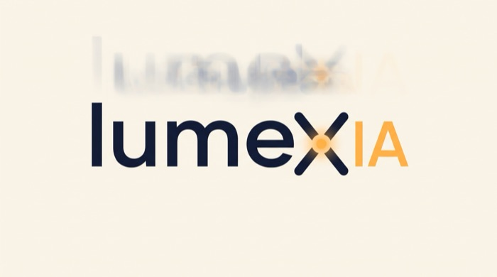
Le logo tel que Gemini l'a généré : fond ivoire et une copie floue parasite au-dessus du mot.
Après détourage par Claude Code (script detourer-logo.py) : PNG transparent, copie floue supprimée, version principale et version inversée.
Icône (application, favicon)
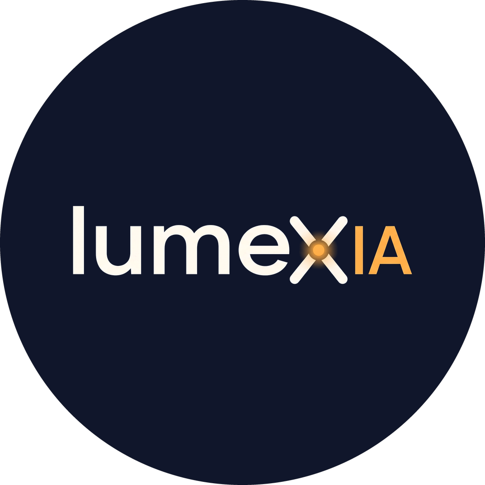
Avatar rond pour les réseaux et Zeoob
L'identité « arc de la journée ». Toute la marque suit la lumière d'une journée : l'aube ambrée, le jour clair, le soir chaud, la nuit profonde. Le site a deux ambiances (Jour et Nuit) et un seul motif récurrent, l'arc de lumière en dégradé Aube → Ambre.
6La charte graphique et le ton
Les couleurs
Nuit #10162B
Ivoire #FAF7F2
Ambre #FFB547
Aube #FFE2B8
Bleu circadien #3D5AFE
Brume #E7EAF3
Ardoise #5A6178
Chaque association de couleurs a été vérifiée par script selon la norme d'accessibilité WCAG (contraste minimal de 4,5:1 pour le texte). Exemple de règle qui en découle : le bouton principal est ambre avec un texte Nuit (contraste 10,2:1), jamais avec un texte blanc ; l'ambre n'est jamais utilisé pour du texte sur fond ivoire (1,6:1).
Les typographies
Usage
Police
Exemple
Titres, logo, prix
Sora
Ta lumière. Ton rythme.
Textes, boutons
Inter
Les lampes LumexIA adaptent leur lumière au moment de la journée.
Données techniques
JetBrains Mono
806 lm · 2200–6500 K · 9 W
Le style visuel
Deux familles de photos : les photos produit (produit seul, fond Brume uni, format carré) et les photos d'ambiance (vrais intérieurs d'adultes, la lumière du produit est la source principale, l'heure de la journée se lit à la couleur de la lumière). Pour éviter l'effet « image IA », chaque prompt d'ambiance se termine par une phrase imposée : photographie d'intérieur naturelle, léger grain, cadrage un peu imparfait, pas de rendu 3D. Interdits : texte ou logo dans l'image, enfants, néons, visages nets d'inconnus.
Le ton de voix
Trois traits de personnalité : lumineux, apaisant, malin. On tutoie, on écrit des phrases courtes et on commence par le moment de vie avant le produit (« 18 h, l'écran fatigue tes yeux »). Le fichier tone-of-voice.md donne un tableau du vocabulaire (« t'aide à préparer ton sommeil » plutôt qu'« améliore ton sommeil »), le ton par canal (site, Instagram, TikTok, e-mail, application) et une liste de vérification avant publication.
7Les fiches produits et le système de marque
Produit
Type
Prix TTC
Pour qui
Lumex Bulb
Ampoule connectée E27
17,90 € (lot de 3 : 44,90 €)
S4, S3
Lumex Strip
Ruban LED connecté 2 m
49,90 €
S2
Lumex Halo
Lampe de bureau connectée
99,00 €
S1
Lumex Aube
Réveil lumineux
79,00 €
S1
Lumex Orbe
Lampe d'ambiance sans fil
69,00 €
S1, S2
Lumex Switch
Interrupteur sans fil, sans pile
29,90 €
S3, S4
Pack Départ
3 Lumex Bulb + 1 Lumex Switch
69,00 € (au lieu de 83,60 €)
S3
Chaque fiche contient : une accroche, une description, des points clés, un tableau de caractéristiques (chaque chiffre traduit : « 806 lumens, l'équivalent d'une ampoule classique de 60 W »), le contenu de la boîte, un titre et une description SEO dont la longueur est vérifiée par script, et les textes alternatifs des images. Les points non décidés sont signalés au lieu d'être inventés : la classe énergétique est notée « étiquette énergétique à venir ».
Le système de marque en fichiers .md
Fichier
Rôle
brand/projet.md
Le projet, la cible, le positionnement, les valeurs, les lignes rouges. Prioritaire en cas de conflit.
brand/value_proposition.md
Value Proposition Canvas des 4 segments : tâches, problèmes, bénéfices, messages.
brand/design.md
La charte graphique : logo, couleurs, typographies, composants, photos.
brand/tone-of-voice.md
Le ton de voix et les règles d'écriture.
brand/produits.md
La gamme, les prix et les 7 fiches. Prioritaire pour les prix.
brand/systeme-de-marque.md
Le résumé en une page.
CLAUDE.md
Le mode d'emploi pour l'IA : ordre de lecture, règles, où trouver quoi. Chargé automatiquement par Claude Code à chaque session.
8Le site web
15 pages statiques en français : accueil, catalogue, 7 fiches produits, Lumex Sense, La marque, Aide (questions fréquentes, livraison, contact), landing page Black Friday, mentions légales et page 404. Chaque page a un en-tête avec le menu, un interrupteur Jour / Nuit qui change l'ambiance de tout le site, un pied de page complet et un panier de démonstration. Un bandeau rappelle partout qu'il s'agit d'un projet d'examen.
Lien :adresse Netlify à compléter · code : github.com/Vald-01/LumexIA
L'accueil : le hero en ambiance soir, puis l'arc de la journée interactif (on fait glisser le temps, le salon change de lumière).
Accueil sur mobile.Black Friday sur mobile.
Ce qui rend le site fidèle à la marque
L'arc de la journée interactif rend visible la promesse de Lumex Sense.
Un calculateur d'économies affiche sa méthode de calcul, comme l'exigent nos lignes rouges.
Vérifié par Claude Code dans un navigateur : panier, livraison offerte, mode Jour/Nuit, affichage mobile, SEO et accessibilité (contraste ≥ 4,5:1, focus visible, zones cliquables ≥ 44 px).
Le catalogue, après notre correction des cartes produits : badge court sur une ligne, sans ligne technique, ancien prix en petit au-dessus du prix.
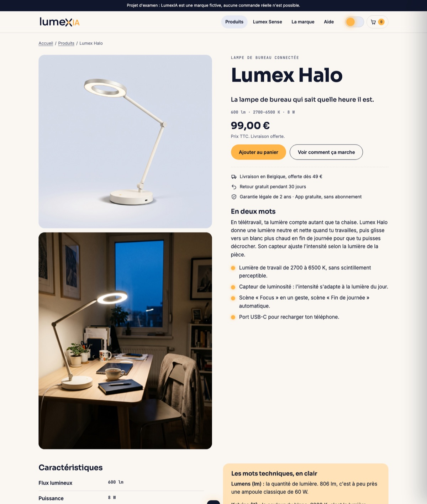
Une fiche produit (Lumex Halo).
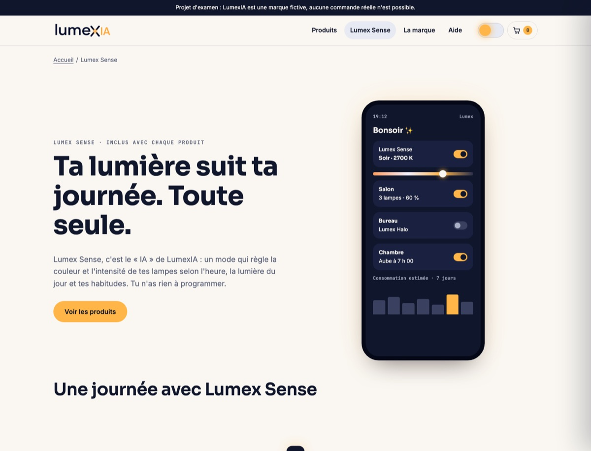
La page Lumex Sense, avec une maquette de l'application dessinée en code.
9Les photos
Claude Code a écrit 29 prompts pour Gemini, en anglais, regroupés dans docs/prompts-gemini.md avec un mode d'emploi. L'idée clé est l'ordre de génération : on crée d'abord les photos produit, qui servent de référence, puis on les joint aux prompts d'ambiance pour que le même objet apparaisse partout. Pour la série « arc de la journée », on génère la scène de l'aube, puis on demande à Gemini de modifier cette image pour le jour, le soir et la nuit : la pièce reste identique, seule la lumière change.
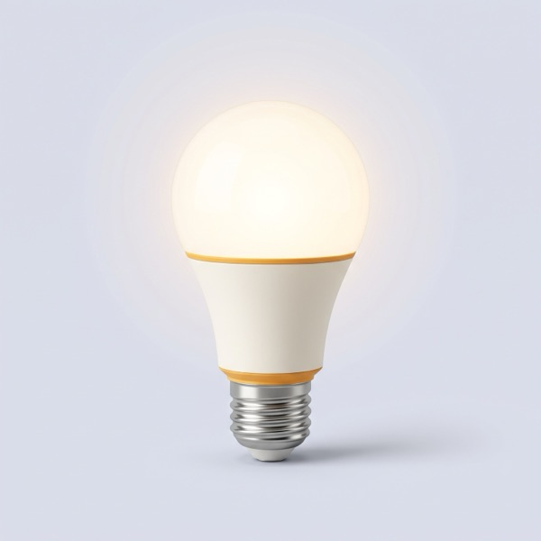
Photo produit : Lumex BulbPhoto produit : Lumex HaloPhoto produit : Lumex OrbeAmbiance : Lumex AubeAmbiance : Lumex StripHero de l'accueilCible S1 : jeunes actifsMarque : l'atelier
Exemple de prompt (photo produit Lumex Bulb)
Professional e-commerce product photograph, square 1:1 format.
A single smart LED light bulb standing upright, centered, seen from a slightly low three-quarter angle. Classic A60 bulb shape. The glass is milky opal white and the bulb is switched on, glowing a soft warm white (about 2700K)… The base housing is matte ivory polycarbonate (#FAF7F2) with a thin warm amber ring (#FFB547)…
Background: seamless, perfectly plain light blue-grey (#E7EAF3), no texture, no props…
No text, no letters, no logo, no brand name, no watermark, no hands, no other objects.
Les codes couleur de la charte sont écrits dans le prompt : c'est ce qui donne aux produits le même ivoire et le même liseré ambré sur toutes les images.
Après la génération : un script de Claude Code convertit les images (JPG de 1 600 px maximum, 120 à 500 Ko) et les place dans le site. Claude Code a vérifié chaque image : il a corrigé deux noms de fichiers mal tapés et repéré un logo Nike sur une basket dans la photo du Lumex Switch, qu'il a effacé par retouche, car la charte interdit toute marque d'autrui.
10Les publications pour les réseaux sociaux
9 publications pour la semaine du Black Friday, sur Instagram, TikTok et LinkedIn, avec 14 visuels prêts à publier. Chaque publication a son segment, sa date et son heure, une accroche, une légende, des hashtags et un texte alternatif (social/publications.md).
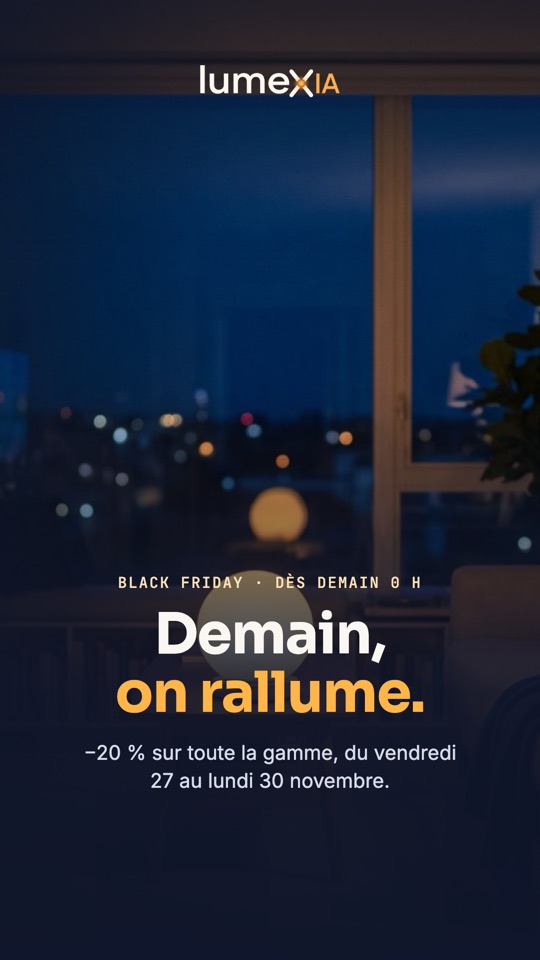
Story, veille du Black FridayPost : Pack Départ
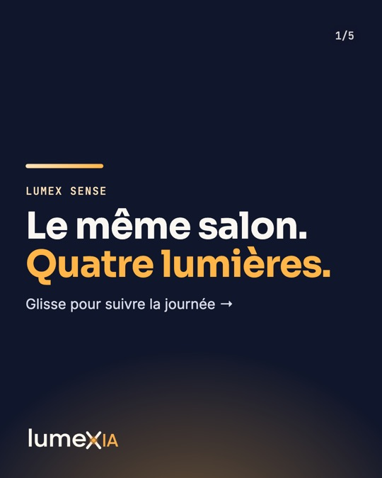
Carrousel : couverture
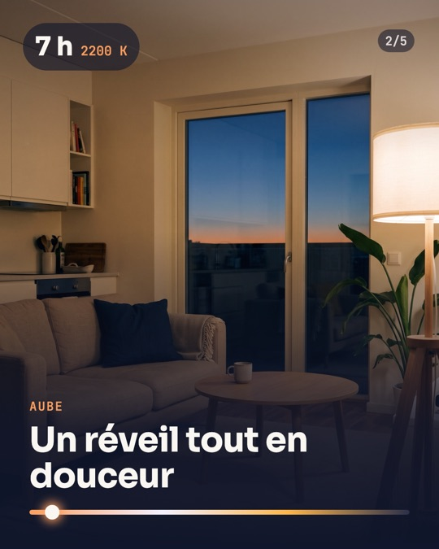
Carrousel : 7 h
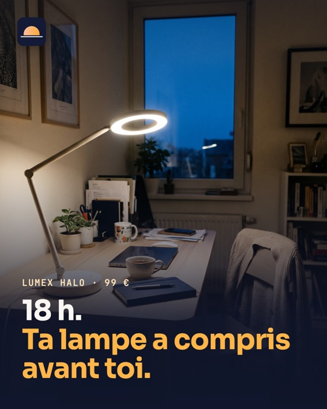
Post : Lumex Halo
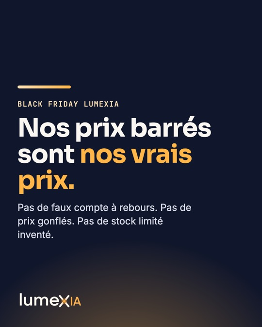
LinkedIn : nos valeursCarrousel : le calculCouverture du reel
Comment les visuels sont faits
Les générateurs d'images écrivent souvent mal le texte (lettres déformées, fautes). Nous avons donc séparé les rôles : Gemini fait la photo, le code fait le texte. Claude Code a créé des gabarits HTML aux couleurs de la charte (polices Sora et Inter, logo, prix), que Google Chrome transforme en PNG. Le texte est net et sans faute, et un post se modifie en changeant une ligne puis en relançant node src/social.mjs.
Exemple de légende (post Lumex Halo)
« POV : il est 18 h et ta lampe a compris avant toi qu'il était temps de lever le pied. 🌙 Lumex Halo éclaire ton bureau d'un blanc net pendant la journée, puis passe à une lumière plus chaude et plus douce en fin d'après-midi. Le signal que tu peux fermer l'ordi. 99 €, sans abonnement. Lien en bio. »
Maquettes Zeoob : nous avons mis les posts en situation sur Zeoob, avec un avatar rond du logo créé par Claude Code.
Insérer ici 2 ou 3 captures d'écran des posts Zeoob.
11La vidéo
« Une journée de lumière » : le même salon, du lever au coucher. La caméra ne bouge pas : c'est la lumière qui raconte la journée, comme le fait Lumex Sense. Nous avons généré la vidéo avec Veo 3 dans Gemini, à partir d'un seul prompt : un plan unique de 10 secondes, en accéléré, avec le son.
La vidéo :github.com/Vald-01/LumexIA/blob/main/video/lumexia-video.mp4
Le prompt Veo 3
A static wide shot of the same cozy, lived-in apartment living room, filmed as a smooth time-lapse of one full day in 8 seconds. Beige fabric sofa with navy blue cushions, round light-wood coffee table, a floor lamp with a linen shade, a small round glowing table lamp, a large balcony window with a city view, green plants, a bookshelf.
The story is told only by the light. It starts at dawn: blue morning light outside, the lamps glow a soft orange (2200 K) and slowly brighten. Then daytime: bright, neutral white light fills the room. Then evening: the sky turns deep blue and the lamps shift to a warm amber glow (2700 K), dimmer and cozy. It ends at night: everything is dark except one small round lamp giving a low amber glow.
Camera locked on a tripod, no camera movement. Natural interior photography, soft real-world light falloff, subtle film grain, realistic, not a 3D render, not glossy, not oversaturated. No people. No text, no logos, no brand names.
Audio: gentle ambient sound evolving with the day, distant birds at dawn, soft city murmur at noon, quiet evening, calm silence at night, with a soft, warm piano melody. A calm, warm female voice says in French: "Ta lumière suit ta journée. Toute seule."
Les choix derrière le prompt
Un seul plan en accéléré : Veo 3 produit des plans courts ; un accéléré montre toute la journée en quelques secondes, sans montage.
Caméra fixe et aucune personne : le seul personnage, c'est la lumière. Cela évite aussi les visages générés par l'IA.
Les températures de couleur (2200 K le matin et la nuit, blanc neutre le jour, 2700 K le soir) reprennent celles de Lumex Sense et du site.
Aucun texte demandé à Veo, qui l'écrit mal ; le logo et la signature s'ajoutent au montage.
La même consigne de rendu que pour les photos (« not a 3D render, not glossy… ») : la vidéo a le même aspect naturel que le reste de la marque.
Le moodboard et le storyboard
Avant de lancer Veo 3, Claude Code a préparé un moodboard (l'ambiance visuelle à viser) à partir de nos photos Gemini. Le storyboard découpe la vidéo réalisée en quatre moments, avec le son et la voix off.
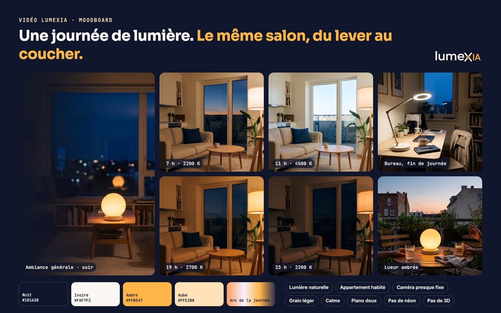
Le moodboard : images de référence, palette et mots-clés d'ambiance.
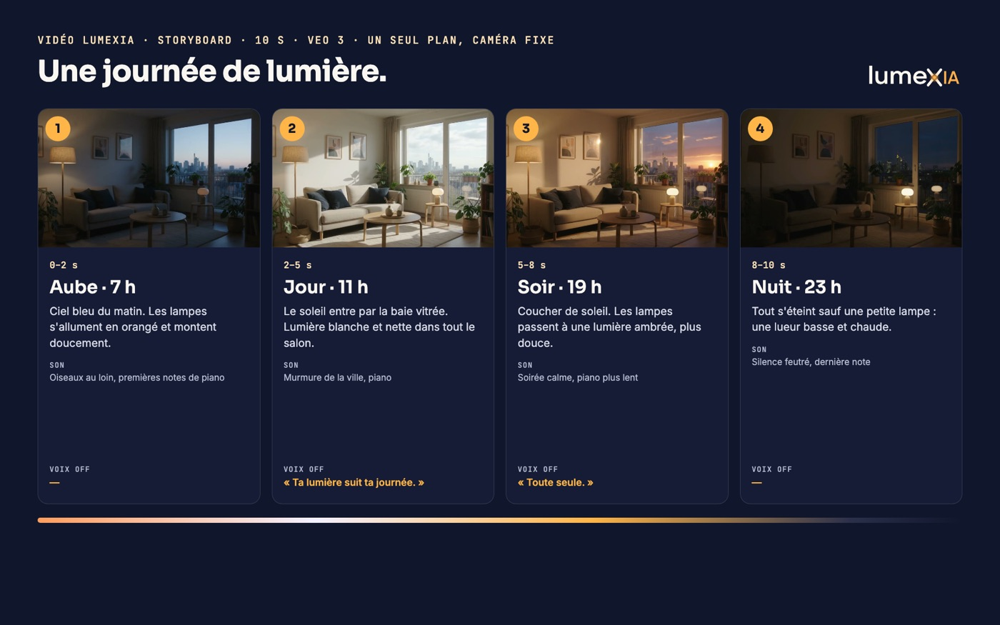
Le storyboard de la vidéo : quatre moments en 10 secondes, avec le son et la voix off.
12La landing page de campagne : Black Friday
L'idée : « On rallume ». Le Black Friday est le vendredi « noir » ; LumexIA est une marque de lumière, alors elle rallume. La campagne prend le contre-pied des Black Friday agressifs et reste fidèle à la marque : honnête, apaisante, maligne.
La landing page, en ambiance Nuit comme le prévoit la charte.
Élément
Choix
Offre
−20 % sur toute la gamme, du vendredi 27 au lundi 30 novembre 2026
Cible
S2 (le segment qui attend le Black Friday), puis S3 et S4
Produit en vedette
Pack Départ à 54,90 €
Compte à rebours
Suit les vraies dates : « commence dans… », « se termine dans… », puis « terminée »
Le respect de la loi, vérifié par script. La directive européenne Omnibus impose d'afficher, à côté d'une réduction, le prix le plus bas des 30 derniers jours. Le prix barré du Pack Départ est donc 69 €, et non 83,60 € (le prix des 4 produits achetés séparément), qui aurait gonflé la réduction. Claude Code a calculé chaque réduction réelle (20 % au minimum) avant d'écrire « −20 % ».
Sections : hero avec compte à rebours, Pack Départ en vedette, gamme à −20 %, « Par quoi commencer ? » (un besoin, un produit), trois engagements (« Nos prix barrés sont nos vrais prix »), questions fréquentes et bandeau final. Le brief complet est dans campagne/black-friday.md.
13Nos prompts et nos skills
Les prompts envoyés à Claude Code
Nous avons travaillé avec des prompts courts, parce que le contexte de la marque était déjà dans les fichiers .md et dans CLAUDE.md. Voici les principaux, dans l'ordre (orthographe revue) :
#
Prompt
Résultat
1
« Voilà des consignes pour un travail. Lis-les complètement et je te demanderai de faire un truc. »
Lecture complète du PDF des consignes
2
« Je pensais à LumexIA : une marque spécialisée dans l'éclairage connecté […] Je te donne un lien GitHub pour lire tout le code et te baser là-dessus (lis bien les fichiers .md, parce qu'il faudra faire ça d'abord avant de créer le site). »
Les 6 fichiers .md de la marque, CLAUDE.md et 4 skills
3
« Oui, fais le site. Je génère les images moi-même, donne-moi juste les différents prompts dont tu as besoin (logo, images du site, etc.). Sois complet, c'est pour Gemini. »
Le site et les 29 prompts d'images
4
« J'ai mis toutes les images à la racine, je te laisse les déplacer où il faut. Juste le logo : enlève le fond, s'il te plaît. »
Import des images, détourage du logo, configuration Netlify
5
« Dans les produits, le badge “Le plus simple pour commencer” est bizarre : fais un truc plus court, en 2 ou 3 mots, sur une ligne. Enlève les infos “sans fil, 4 scènes”, etc. Et mets l'ancien prix en petit au-dessus du prix actuel, pas à côté. »
Cartes produits corrigées
6
« Fais la landing page Black Friday maintenant. »
Brief, page et skill de campagne
7
« Fais les posts pour les réseaux sociaux maintenant. »
9 publications et 14 visuels
8
« Tu sais me générer le logo LumexIA dans un rond pour créer un post sur Zeoob ? »
Deux avatars ronds
9
« Donne-moi un prompt complet pour la vidéo pour Veo 3. Et génère le rapport PDF de ton côté. »
Prompts vidéo, puis la vidéo générée par nous dans Veo 3, et ce rapport
Nos skills : des instructions réutilisables
Un skill est un fichier d'instructions que Claude Code charge quand une tâche correspond à sa description. Nous en avons écrit cinq, dans .claude/skills/. Chacun indique les fichiers sources à lire, les étapes, les règles et une vérification finale.
Skill
Ce qu'il fait
lumexia-fiche-produit
Écrire une fiche produit : accroche, description, caractéristiques traduites, contenu de la boîte, SEO, textes alternatifs.
lumexia-prompt-visuel
Écrire un prompt d'image conforme à la charte, puis vérifier l'image reçue.
lumexia-post-reseaux
Créer une publication : segment, moment de la journée, accroche, légende, hashtags, date et heure, texte alternatif.
lumexia-landing-campagne
Créer une landing page de campagne : brief, offre conforme à la directive Omnibus, page, compte à rebours honnête, vérifications.
lumexia-verif-marque
Relire n'importe quel contenu avant publication : nom, ton, prix, promesses interdites, règles légales, accessibilité.
14Le workflow IA : agents et sous-agents
Notre workflow repose sur un agent principal qui orchestre, des sous-agents spécialisés qui ont chacun un rôle précis, et des humains qui décident et valident.
Nous (l'équipe)
DéciderSujet, cible, idée de campagneGénérerImages dans Gemini, vidéo dans Veo 3ValiderRelire, corriger, refuser
Mémoire de marque
CLAUDE.mdLu à chaque sessionbrand/*.mdProjet, cible, charte, ton, produitsLignes rougesCe que l'IA ne fait jamais
Agent principal
Claude CodeLit, planifie, écrit, exécute, vérifie, publie sur GitHub
Sous-agents spécialisés (skills)
Fiche produitPrompt visuelPost réseauxLanding de campagneVérification de marqueLe relecteur
Agents externes
GeminiImagesVeo 3VidéoZeoobMaquettes de posts
Outils automatisés
build.mjsSitesocial.mjsVisuels des postsvideo.mjsMoodboard et storyboardimporter, détourerImages et logosrapport.mjsCe PDFGitHub et NetlifyMise en ligne
Comment une tâche circule
Nous donnons la consigne, souvent en une phrase (« Fais la landing page Black Friday »).
L'agent principal lit la mémoire de marque (CLAUDE.md, puis les fichiers brand/ utiles) et choisit le sous-agent adapté.
Le sous-agent fait son travail en suivant ses étapes : par exemple, le skill de campagne écrit d'abord le brief, calcule les réductions, puis génère la page.
Les outils automatisés vérifient : longueurs SEO, contrastes, dates, calculs, affichage sur mobile, et le sous-agent de vérification relit le contenu.
Pour les images et la vidéo, l'agent principal prépare les prompts, nous les lançons dans Gemini ou Veo 3, puis il importe et contrôle le résultat.
Nous validons ou demandons une correction ; l'agent enregistre chaque étape sur GitHub, et Netlify met le site en ligne.
15Réutiliser le workflow
Pour une nouvelle campagne LumexIA
Il suffit d'une phrase : « Fais la landing page de la Saint-Valentin ». Le skill lumexia-landing-campagne reprend la même méthode (brief, offre conforme, page, vérifications) et le skill lumexia-post-reseaux produit les publications qui l'accompagnent. Les visuels se régénèrent avec une commande.
Pour une autre marque
Copier le dépôt et remplacer les 6 fichiers de brand/ par ceux de la nouvelle marque (en commençant, comme nous, par projet.md).
Adapter CLAUDE.md et le nom des skills ; leur structure (sources, étapes, règles, vérification) reste valable.
Changer les données dans src/data.mjs et src/social-data.mjs, puis relancer les scripts : le site, les visuels et le rapport se reconstruisent.
Garder la règle la plus utile du projet : les fichiers .md avant les contenus.
Pour aller plus loin avec de vrais sous-agents
Dans notre projet, les sous-agents sont des skills : des rôles spécialisés que l'agent principal endosse au bon moment. Claude Code peut aussi lancer de vrais sous-agents, qui travaillent en parallèle, chacun dans son propre contexte :
Production en parallèle : un sous-agent par livrable (site, posts, vidéo) qui travaillent en même temps, chacun avec son skill.
Un relecteur indépendant : un sous-agent qui n'a pas écrit le contenu applique lumexia-verif-marque. Il repère mieux les erreurs que l'auteur lui-même.
Un sous-agent de recherche qui vérifie les faits (lois, normes, tendances) avant la rédaction.
Commande
Ce qu'elle fait
node src/build.mjs
Régénère le site et vérifie les titres et descriptions SEO
bash scripts/importer-images.sh assets/gemini
Importe et convertit les images de Gemini
node src/social.mjs
Régénère les 14 visuels et le calendrier des posts
node src/video.mjs
Régénère le moodboard et le storyboard
node src/rapport.mjs
Régénère ce rapport en PDF
16Conclusion
L'IA est utile pour produire vite, beaucoup et de façon cohérente, et pour vérifier ce qu'un humain laisserait passer.
Produire : en quelques jours, un système de marque complet, un site de 15 pages, 29 images, 9 publications, une vidéo et une campagne. Seuls, ce travail nous aurait demandé des semaines.
Rester cohérent : grâce aux fichiers .md, la même couleur, le même ton et les mêmes prix se retrouvent partout, du site à la vidéo.
Vérifier : les contrastes, les longueurs SEO, les jours de la semaine, les calculs d'économies et de réductions sont contrôlés par des scripts, pas « à l'œil ».
Automatiser : une correction se répercute partout en relançant une commande.
Et nous avons été utiles pour décider, juger et corriger.
Décider : le sujet, les cibles, le choix du dépôt de référence et la méthode « fichiers .md d'abord ».
Générer et choisir : nous avons lancé les images dans Gemini, sélectionné les meilleures versions et généré la vidéo dans Veo 3.
Juger le rendu : c'est nous qui avons trouvé les cartes produits trop chargées et demandé un badge plus court, moins d'informations et un ancien prix mieux placé.
Penser au contexte : nous avons fait remarquer que l'examen a lieu après le Black Friday, donc que la page affichera « offre terminée » le jour de la correction.
Garder la main : rien n'a été publié, envoyé ou acheté sans notre accord.
Ce que nous retenons
L'IA se trompe, et pas toujours là où on l'attend : Gemini a ajouté une copie floue de notre logo, un logo de marque sur une chaussure et des noms de fichiers erronés ; un générateur d'images écrit mal le texte ; et un prix barré « logique » (83,60 €) aurait été illégal. Ces erreurs ont été corrigées parce que les règles étaient écrites à l'avance dans les fichiers de la marque, et parce que chaque résultat a été vérifié, par un script ou par nous. Notre conclusion : l'IA est un excellent exécutant quand on lui donne un cadre précis, et ce cadre, c'est à nous de l'écrire.
Projet d'examen : LumexIA est une marque fictive. Aucun produit n'est vendu, aucune publication n'a été diffusée, et aucun avis, chiffre ou partenariat n'a été inventé.